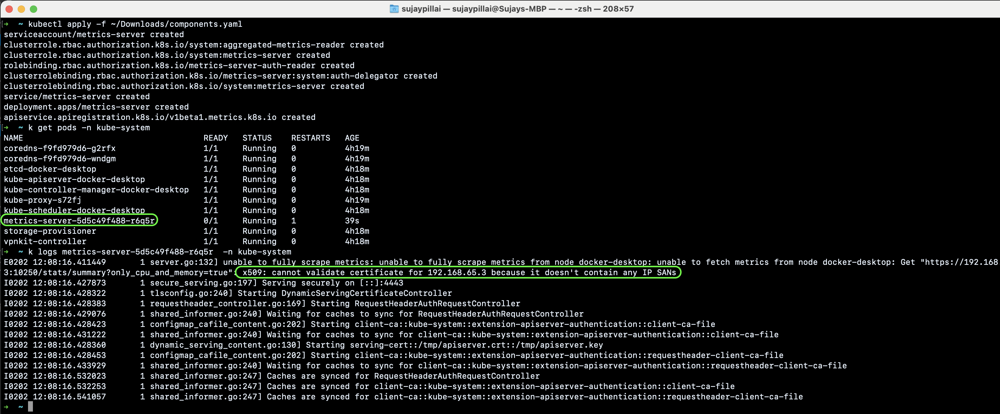
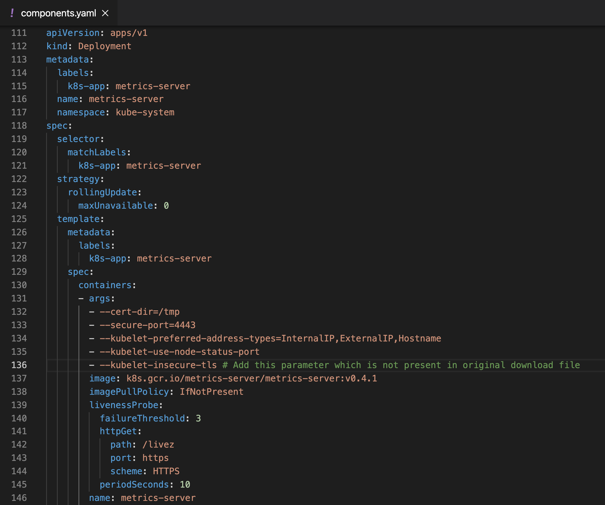
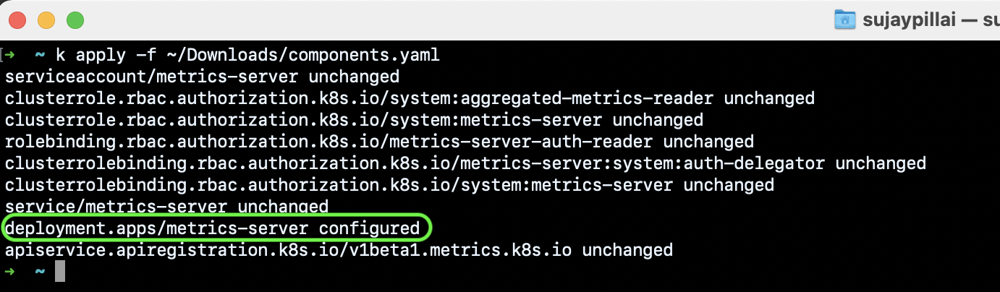
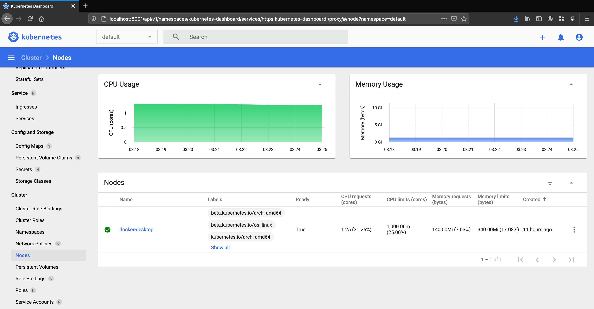

The steps below in this blog will help you setup Kubernetes Metrics Server on Docker Desktop which provides a standalone instance of Kubernetes running as a Docker container.
Kubernetes Metrics Server is a scalable, efficient source of container resource metrics for Kubernetes built-in autoscaling pipelines. Metrics Server collects resource metrics from Kubelets and exposes them in Kubernetes apiserver through Metrics API for use by Horizontal Pod Autoscaler and Vertical Pod Autoscaler.
Metrics Server offers:
- A single deployment that works on most clusters
- Scalable support up to 5,000 node clusters
- Resource efficiency: Metrics Server uses 1m core of CPU and 3 MB of memory per node
You can use Metrics Server for:
- CPU/Memory based horizontal autoscaling
- Automatically adjusting/suggesting resources needed by containers
Prerequisites
- Install Docker Desktop
- Enable Kubernetes on Docker Desktop
Once you have enabled the Kubernetes on Docker Desktop, and if you run the below commands you should see messages like:
|
|
|
|
Metrics server isn’t included with Docker Desktop’s installation of Kubernetes and to install it we will have to download the latest components.yaml file from Metrics-Serverreleases page and open it in your text editor.
If you try to execute the command kubectl apply -f components.yaml you will see the pods get created but with some errors as highlighted below:

Add the line –kubelet-insecure-tls under the args section as shown below :

Execute the command kubectl apply -f components.yaml to apply the changes:

Now if you execute the kubectl top node & kubectl top pod -A commands you should see the output:
|
|
|
|
You can also use Kubernetes Dashboard to view the above data (and more information) in a web UI. It allows users to manage applications running in the cluster and troubleshoot them, as well as manage the cluster itself.
To deploy Dashboard, execute following command:
|
|
To access Dashboard from your local workstation you must create a secure channel to your Kubernetes cluster. Run the following command:
|
|
Get the token for login to dashboard using the below command:
|
|
To access the HTTPS endpoint of dashboard go to:
|
|
Login to the dashboard using the token from above step and you should see a dashboard as below: 
This setting should only be used for the local Docker Desktop Kubernetes cluster, and not recommended for any hosted or production clusters.